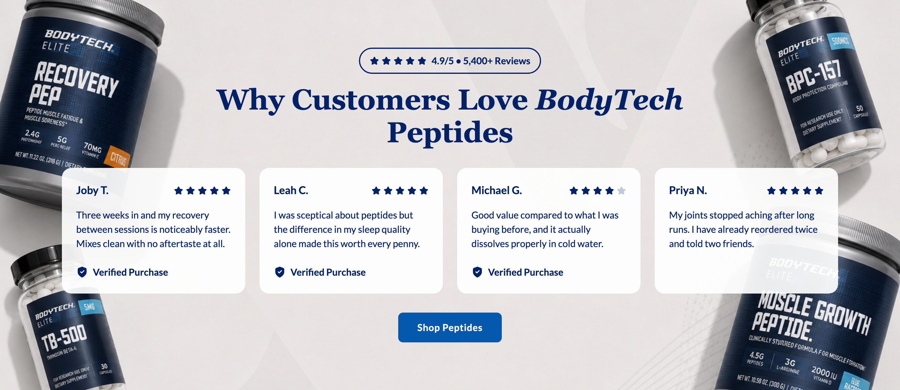
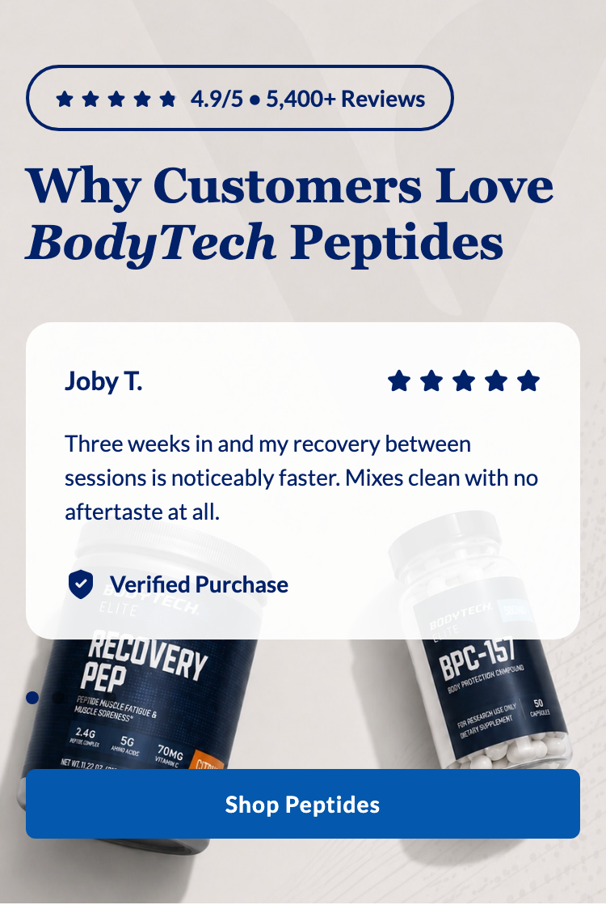
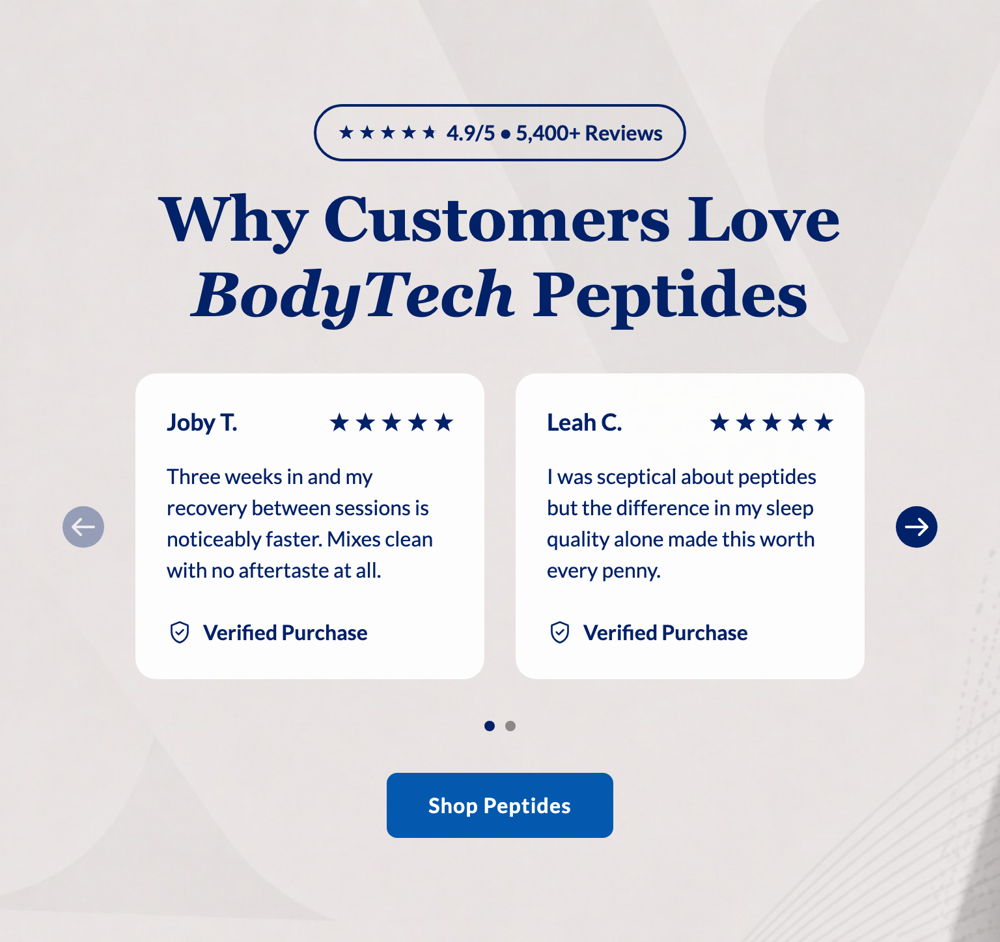
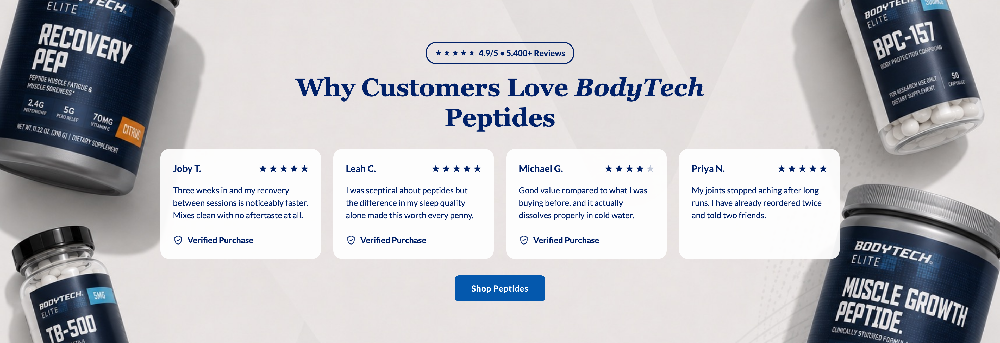

Platter component
Testimonials
The client's spec, reproduced verbatim in substance from Confluence page 897286180, authored by Sarah Lee. Where our implementation deviates it is recorded under Deviations, not by editing the spec. Status on the source page at transcription time was INTERNAL REVIEW.
Spec: https://getplatter.atlassian.net/wiki/spaces/TVS/pages/897286180/FSD+Testimonials
02 — Screenshots
How it renders
Wipe the handle across the design to find where the build drifts from it. The Figma frame and the capture are exported at the same width, so anything that moves under the handle is a real difference. Every width is below as a plain capture.




03 — Fields
What a merchandiser fills in
Generated from _schema.ts, in the order Amplience shows them.
| Field | Type | Constraints | Description | |
|---|---|---|---|---|
headingHeading |
string | required | max 90 min 1 |
The headline above the reviews, e.g. "Why Customers Love BodyTech Peptides". It is centred on desktop and left-aligned on phones, and wraps to a second line rather than shrinking. Wrap words in _underscores_ for italic and **double asterisks** for bold. Write ~12~ for subscript; a registered mark (®) is raised automatically, and a plain asterisk is never formatting. |
headingLevelHeading level |
string | h1 · h2 · h3default "h2" |
Choose h1 only if this module is the first thing on the page and no other h1 exists. Otherwise leave it as h2 — two h1s on one page hurts SEO. Choose h3 when the module sits underneath a section that already has an h2, so the page's heading order stays unbroken. This changes nothing you can see: the size is set separately below. | |
headingSizeHeading size (desktop / mobile) |
string | 64px / 38px · 56px / 34px · 48px / 30px · 36px / 24px · 28px / 20px · 20px / 16pxdefault "48px / 30px" |
A fixed pair from the TVS type scale — the first size applies from tablet up, the second on phones. | |
headingFontHeading font |
string | Lato · corisanderegular · Fieldsdefault "Fields" |
Fields is the serif this module is designed in and is the default. It is not yet installed on vitaminshoppe.com, so until it is, the heading falls back to Georgia — still a serif, but not the exact drawn face. Pick Lato if you would rather the heading match the rest of the site exactly than approximate the design. | |
ratingValueOverall rating |
string | max 3^[0-5](\.[0-9])?$ |
The aggregate score shown in the badge above the heading, out of 5, e.g. "4.9". Type the number only — the module adds the "/5" and draws the stars from it. This is typed by hand and is not read from the review platform, so check it against the live figure before publishing. The badge only appears when both this and the review count are filled in; leave either empty to hide it. | |
reviewCountReview count |
string | max 12 | How many reviews the score is based on, written exactly as you want it to read, e.g. "5,400+". The module adds the word "Reviews" after it, so do not type that. Like the rating, this is manual and not read from the review platform. The badge only appears when both this and the overall rating are filled in. | |
reviewsReview cards |
array | required | Between three and five reviews, shown in the order you list them here. Drag a row to reorder it. Three or four sit as a static row on desktop; a fifth turns the row into a slider with a progress indicator underneath. Phones always show one card at a time with the same indicator. | |
backgroundImageBackground image |
string | required | min 1 | Full URL of the photograph behind the whole module. It is treated as decoration and needs no alt text, so do not put anything readable in it. The cards sit on top at 92% white, so a busy or dark centre makes the reviews hard to read — the design keeps the middle of the frame clear and puts the product at the corners. jpg, jpeg or png. |
backgroundImageMobileBackground image (mobile) |
string | max 500 | Full URL of the phone crop, which the design supplies as a separate portrait image rather than the desktop one re-cropped. Falls back to the desktop image when empty, which will centre-crop it and can push the product out of frame — supply one wherever you can. | |
bodyDescription |
string | max 220 | An optional sentence between the heading and the cards. The design does not draw one, so leaving it empty is the design; fill it in only when the heading needs support. | |
ctaLabelButton label |
string | max 30 | The call to action under the reviews, e.g. "Shop Peptides". The button only renders when both a label and a link are set. It hugs its text on desktop and stretches the full width on phones. | |
ctaUrlButton link |
string | max 500 | Where the button goes. Use a relative path for vitaminshoppe.com destinations. | |
ctaStyleButton colour |
string | dark · light · outlinedefault "dark" |
Dark is #0458AD with white text and is the design. Light is white with #0458AD text and a thin outline — the button sits directly on the background photograph, so Light only reads on a dark photo and disappears on a pale one. Outline is transparent with a black edge and black text, so it depends on the photograph the other way round: it needs a pale one. | |
priorityPrioritise image loading |
boolean | default false |
Switch on when this module is the first thing on the page, so the background photograph loads immediately instead of lazily. | |
sectionIdSection ID |
string | max 50^[a-z][a-z0-9-]*$ |
A name for this specific module, used for two things. A link anywhere on the site can jump straight to it by ending the URL with # and this name, e.g. #customer-reviews. Page-level CSS can also target this one module rather than every testimonials module. Use lowercase letters, numbers and hyphens, start with a letter, and make it unique on the page — two modules sharing an ID will break the jump link. Leave empty if you need neither. |
04 — Sample content
A filled-in example
From _content.json. This is what the screenshots above are rendering.
{
"heading": "Why Customers Love _BodyTech_ Peptides",
"headingLevel": "h2",
"headingSize": "48px / 30px",
"headingFont": "Fields",
"ratingValue": "4.9",
"reviewCount": "5,400+",
"reviews": [
{
"name": "Joby T.",
"rating": 5,
"review": "Three weeks in and my recovery between sessions is noticeably faster. Mixes clean with no aftertaste at all.",
"showVerifiedPurchase": true
},
{
"name": "Leah C.",
"rating": 5,
"review": "I was sceptical about peptides but the difference in my sleep quality alone made this worth every penny.",
"showVerifiedPurchase": true
},
{
"name": "Michael G.",
"rating": 4,
"review": "Good value compared to what I was buying before, and it actually dissolves properly in cold water.",
"showVerifiedPurchase": true
},
{
"name": "Priya N.",
"rating": 5,
"review": "My joints stopped aching after long runs. I have already reordered twice and told two friends.",
"showVerifiedPurchase": false
}
],
"backgroundImage": "../assets/testimonials-desktop-1717.jpg",
"backgroundImageMobile": "../assets/testimonials-mobile-853.jpg",
"ctaLabel": "Shop Peptides",
"ctaUrl": "#bodytech-elite",
"ctaStyle": "dark",
"priority": false,
"sectionId": "customer-reviews"
}05 — Design reference
Design reference
The section frames are 18228:428020 (desktop, 1512 by 705) and 18228:432675 (mobile, 375 by 577), both inside the 18228:432757 "Highlighted Reviews" section. There is no Mode=Dark/Light pair and no carousel-versus-grid variant — the two breakpoints are the only variants drawn.
| Concern | Desktop | Mobile |
|---|---|---|
| Section padding | 128 inline, 80 block | 16 inline, 40 block |
| Background | one image fill, object-fit: cover, inset 0 — no scrim, no gradient, no colour | one image fill, a separate portrait asset at 853 by 1844, custom crop rather than centred |
| Alignment | centred | left-aligned throughout |
| Rating badge | hug, padding 8 and 16, radius 100, 2px #012169 border, no fill | identical box |
| Badge stars | five 16px stars, gap 4, #012169, then 8 gap to the text | five 12px stars, same gaps |
| Badge text | 16px, 700, line-height 1.5, #012169, nowrap | 14px, otherwise identical |
| Heading | Fields 700, 48px, line-height 1.2, #012169, 858 max width | Fields 700, 30px, line-height 1.2, full width |
| Badge to heading | 16 | 16 |
| Heading to cards | 32 | 32 |
| Cards in view | 4 at 296 wide, gap 24, equal heights | 1 at 343, no peek and nothing overflowing |
| Progress indicator | none drawn | three 8px dots, 8 gap, active #012169, inactive black at 40%, left-aligned |
| Cards to indicator | n/a | 32 |
| Indicator to button | n/a | 40 |
| Cards to button | 32 | n/a |
| Button | hug, max-height 55, padding 16 and 32, radius 8, #0458ad, 16px 700 white, tracking 0.64px, title case | full width, padding 14 and 18, radius 6, 14px 700 white, tracking 0.56px |
| Arrows | none | none |
Card interior. The card's own box is identical at both breakpoints; only the type sizes change.
| Element | Desktop | Mobile |
|---|---|---|
| Card | padding 24, radius 16, fill #ffffff at 92% fill opacity, no border, no shadow | identical |
| Card layout | column; a name-and-stars header row, the review body, then a Verified Purchase footer | identical |
| Name | Lato 700, 18px, line-height 1.5, #012169, nowrap | 16px |
| Card stars | five 16px stars, gap 4, #012169, right-aligned by justify-between | identical |
| Header to body | 16 | 16 |
| Review body | Lato 400, 16px, line-height 1.5, #012169, fills the width | 14px |
| Body to footer | 24 minimum; the footer sits at the card's bottom edge where the card is taller | 24 |
| Verified Purchase | 20px shield-tick glyph, gap 8, Lato 700 16px, line-height 1.5, #012169, nowrap | 14px text, same glyph |
Two readings from an earlier pass were wrong and are corrected here: the card carries no border at either breakpoint — the only 2px #012169 outline in the design belongs to the rating badge — and review_highlighted is the card frame's own layer name, not a highlighted-state annotation. There is no active-card treatment to build.
The mobile rating badge carries a designer annotation, "Make optional if reviews are not great", which agrees with the Admin requirement marking the badge Optional.
The card's 92% white fill is the "fixed opacity" the Admin requirement refers to. It is a fill opacity, not a layer opacity, so the text on the card stays fully opaque.
The desktop CTA is the shared button-primary component at Size=Desktop, Hierarchy=Primary, Mode=Light. Figma's Mode names the surface behind the button, so Figma Mode=Light is our ctaStyle: dark — see sections/CLAUDE.md.
06 — User requirement
User requirement
- User can swipe/arrow through cards.
- User can click the CTA to navigate to the linked destination (e.g., "Shop Peptides")
07 — Admin requirement
Admin requirement
| Content Type | Functional Requirement | Asset/Copy Requirement | Responsive & Content Behavior |
|---|---|---|---|
| Rating Summary Badge (Optional) | Admin can input the aggregate rating value and review count. (Manual input, not automatic) | ||
| Heading (Required) | Admin can edit the section heading. | ||
| Review Card (Required) | Admin can add 3-5 testimonial cards. (Manual input, not automatic) Each card includes: Name · Rating · Review · Verified Buyer? (checkbox, checked as default. If not checked, this badge does not appear). There is fixed opacity added to card and it's not configurable within admin. | Copy: 15-20 words per review | With 3-4 testimonials: no carousel, cards display statically, center-aligned. With 5 testimonials: displays 3 cards at a time and becomes a carousel with a progress-dot indicator, consistent with the mobile pattern. |
| Background (Required) | Admin can upload an image for desktop and mobile separately. | ||
| Button (Optional) | Admin can input a single primary CTA label and destination URL. Admin can change the button color (Dark vs Light). Dark: #0458AD with white text. Light: white with #0458AD text. |
The Asset/Copy and Responsive cells are genuinely blank in the source for every row except Review Card. They are left blank rather than filled with a dash, which would assert "not applicable" where the source asserts nothing.
08 — Other requirements
Other requirements
- Follows FSD: Global SEO Rule, Confluence page 889683969.
- Analytics: Component supports automated impression tracking (viewport entry) and click tracking via the standard
raiseEventhandler.
09 — Open comments
Open comments
Sarah Lee — unanswered 2026-07-29
unanswered 2026-07-29
@Felix Tellmann ready for review
Felix Tellmann — unanswered 2026-08-07
unanswered 2026-08-07
Raised at transcription, against the source page and the two Figma frames. Numbered so they can be answered individually.
- The User requirement and the Admin requirement disagree about whether there is a carousel. "User can swipe/arrow through cards" is stated unconditionally, while the Admin requirement says that with 3-4 testimonials there is "no carousel, cards display statically". Both cannot be true at three cards. Which governs?
- The desktop design shows four cards; the carousel rule describes three. The Admin requirement says five testimonials "displays 3 cards at a time", but the desktop frame draws a static row of four. Is the intended desktop row four wide, with the carousel appearing only past four?
- The mobile pattern is referenced but never defined. The carousel rule ends "consistent with the mobile pattern", and that pattern appears nowhere in the table — only in the frame, which shows one card at a time with three dots. The whole Responsive column reads as desktop-only, so what a 3-card and a 4-card set do on a phone is unstated.
- The mobile frame draws three dots against a minimum of three and a maximum of five cards. Is three dots the drawn example rather than a fixed count?
- "Verified Buyer?" and "Verified Purchase" are two different strings. The admin field is named "Verified Buyer?"; both frames render the badge as "Verified Purchase". Which string does a shopper see, and is it fixed copy or admin-editable?
- Arrows are asked for in the User requirement and drawn in neither frame. The Responsive column specifies a progress-dot indicator only. Do arrow controls render, and at which breakpoints?
- Per-card "Rating" has no defined scale or format. Every card in both frames shows five filled stars. Is the field whole stars 1-5, does it allow half stars, and is a numeric value shown anywhere?
- The Rating Summary Badge does not say how its parts compose. The design reads "4.9/5 • 5,400+ Reviews" preceded by five filled stars. Are the stars derived from the rating value or a third input, and are "/5", the bullet and the "+" author-supplied or template-supplied?
- The background image has no alt-text field and no fallback. Every other module gives each uploaded image its own alt field. Nothing is specified for when the image is slow, fails, or is left empty on one breakpoint.
- Nothing constrains the background, and three elements sit on it unprotected. The review cards are readable whatever is behind them, because they carry their own 92% white fill. The heading, the rating badge and the progress dots do not: they are navy
#012169and 40%-black straight on the photograph. The design works because its photograph is pale grey with a clear centre, but the field accepts any image. Observed while building, not hypothetical — against the design's own mobile artwork, centre-cropped rather than in Figma's exact crop, the three inactive dots landed on a dark navy product and became invisible while the active one stayed legible. Options are a scrim behind the content, a contrast-safe treatment for the dots, or written guidance that the artwork must be pale where the content sits. Left as drawn pending an answer rather than inventing a treatment. - "15-20 words per review" is a word count, and a CMS enforces characters. It is also the only limit stated anywhere in the module: the heading, the reviewer name, the rating value and the review count all have none.
- The section is named Testimonials in the FSD and Highlighted Reviews in Figma. We have built it as
testimonials, following the FSD, because the client reads that spec. Confirm the merchandiser-facing name. - Impression tracking has nothing to call. The same gap as Slim Hero Banner A, Expert Module and Product Carousel: no impression event name appears in any downloaded TVS template, so "automated impression tracking (viewport entry)" cannot be built until TVS supply the event name and payload.
10 — Deviations
Deviations
Slider geometry follows Product Carousel, not this section's own frame
Built
The desktop frame draws 128 inline padding, a 1256 content box and four 296-wide cards, with no arrow controls anywhere — 4 by 296 plus 3 by 24 is exactly 1256, so the drawn layout has no room for an arrow.
We are building the Product Carousel geometry instead: 48 inline padding, a 1416 outer box, 32px arrows in 24px gutters, a 1304 track and four 308-wide cards. Decided by Felix 2026-08-07, so that the two sliders on a page are the same object at the same size rather than two near-misses, and so the arrows the FSD's User requirement asks for have somewhere to live that does not shrink the cards.
The cards get larger than drawn (308 against 296), and the section sits 80px wider. Everything above the track — badge, heading — keeps its drawn treatment.
Arrows and the progress indicator render only when the row overflows
Built
The FSD states both that a user "can swipe/arrow through cards" and that 3-4 cards show "no carousel, cards display statically". Rather than branch on the card count, the track is a scroll container at every count and the controls test reviews.length > perView. Three or four cards therefore fill the row, do not overflow, and render no arrows and no dots — matching the static desktop design; five overflow and the controls appear. One code path, and the FSD's two statements stop contradicting each other.
The scroll-snap track and the star strip are extracted to shared components
Built
components/carousel.css and components/stars.css are new files carrying mechanics that already existed in components/product-carousel.css and blocks/product-card/product-card.css. Testimonials is built on the shared files; the two existing sections are not migrated in this change. Their owning session asked to do that migration itself once its work is committed and the repo build is green, which is the right call — migrating working sections onto freshly extracted classes while the build is red is where a silent regression lands. Until then the old classes and the new ones coexist.
The four-card row starts at 1280, not at the 768 breakpoint
Built
The frames draw one card at 375 and four at 1512, and the band between them is undrawn — the general trap in sections/CLAUDE.md § Breakpoint. Applying the desktop four-up at 768 does not shrink the row, it starves it: 768 less 96 of section padding less 112 of arrow gutter leaves a 560 track, and four cards in 560 is 122 each. The star strip alone is 96 wide and the reviewer name sits beside it on the same row, so the card's own header cannot fit, never mind the review.
The row is therefore one card to 767, two from 768, and four from 1280, which gives 268-wide cards at 768, 250 at 1280 and the drawn 308 at 1512. The count is set per breakpoint from this section's own markup rather than inside components/carousel.css, because how many cards fit is a property of what is in them: Product Carousel hits its own floor at 1024 for a different reason (a card narrower than its add-to-cart button), and one breakpoint baked into the shared component would be wrong for whichever section did not choose it.
The arrow gutter is reserved even when the arrow is hidden
Built
The arrows render only when the row overflows, but their 32px column and 24px gap stay in the layout at every card count. Without that, four cards means no arrows, which means no gutters, which means the track widens from 1304 to the full 1416 and every card resizes from 308 to 336 — so removing a fifth review would silently resize the other four. The gutter is structural; only its contents are conditional.
The arrow glyph is drawn from Product Carousel's reference, not this one
Built
This section's frames draw no arrows at all, so the prev/next glyph has no reference here. It is drawn from 18227:402840 / 18227:402845, measured for Product Carousel: circle 32, icon frame 24 inset 4, glyph 18 by 14 in white.
The path inherited from components/product-carousel.css rendered its shaft 2px short. The cause is worth recording because it is invisible in review: Figma exports the glyph as a filled path, ours is stroked, and a round-capped 2px stroke extends one unit past the geometry on every side. Geometry and ink are therefore not the same measurement, and comparing one against the other reads as a much larger error than it is. Correct geometry for 18 by 14 of ink is 16 by 12, i.e. x 4-20 and y 6-18. Both sliders now carry the corrected path from the shared component.
Desktop cards have no rating in the drawn design, but the schema requires one
Built
Every card in both frames shows five filled stars, so the design does not demonstrate a partial rating. The schema takes a whole number 1-5 per card and draws it accurately rather than rounding to five. See Open comment 7.
The progress dots are buttons that page the track
Built
The FSD specifies the indicator as a drawing — "three 8px dots, 8 gap, active #012169, inactive black at 40%" — and says nothing about pressing one. It shipped as a row of <span>s inside an aria-hidden wrapper, i.e. an output only, which leaves the mobile breakpoint with no pagination control at all: the arrows are drawn desktop-only and are hidden below md, so a shopper on a phone could reach the fourth review by swiping and by nothing else. Each dot is now a <button> that scrolls to its page, which is what a shopper already expects a dot to do, and the wrapper drops aria-hidden because a focusable control inside a hidden subtree is reachable by Tab and invisible to the reader on it.
Nothing about the drawing changes: the dots are still 8px on an 8px pitch, still left-aligned below md and centred above it, and the row is still 8px tall, byte-identical in layout to the spans it replaces. The hit area is grown to 16 by 24 by an invisible ::after rather than by padding — padding would push the dots apart and lose the drawn rhythm. 4px each side is the ceiling, not a preference: 8px would make two neighbouring targets meet in the middle of the gap, so each dot would start taking clicks aimed at the next one.
Movement uses the track's own scroll-behavior: smooth, so the reduced-motion rule already in components/carousel.css covers the dots with no new guard.